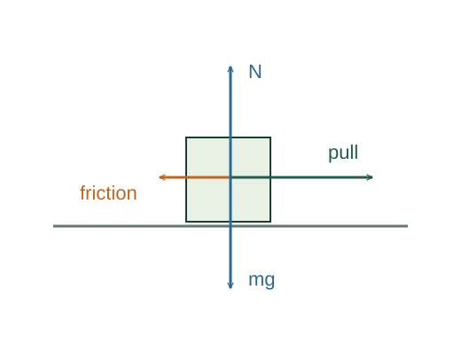

What Newton’s second law assumes
Newton’s second law is a foundational empirical law of classical mechanics. It connects interactions to changes in momentum; component equations and acceleration predictions follow from it.
What the symbols mean
𝐩 = m𝐯: momentum; 𝐅ext: external force; m: constant mass; 𝐚: acceleration in an inertial frame.
When this applies
Classical speeds and an inertial frame. For variable-mass systems, identify momentum flowing across the system boundary before using a simple particle equation.

Choose the system
Draw a boundary around the object. List forces exerted by things outside that boundary. Forces between parts inside the boundary are not additional external forces.
Apply the law to momentum
The physical input is the relation between net external force and momentum change. For fixed mass the derivative of m𝐯 is m times the velocity derivative.
Resolve onto independent axes
A vector equation holds along each Cartesian axis. Resolve oblique forces before summing their signed components.
Go deeper at this stepHow do I resolve an angled force?Why vector components use sine and cosineUse a constraint only when it applies
An object resting on a horizontal floor has zero vertical acceleration. With only its weight and the normal force vertically, their magnitudes must match. Other vertical forces or acceleration change that result.
Where each equation comes from
Derived equations link to an argument below. Definitions, physical postulates and constitutive models are identified as the inputs of that argument.
Derivation of the main resultDerived result
Conditions: Classical speeds and an inertial frame. For variable-mass systems, identify momentum flowing across the system boundary before using a simple particle equation.
- Choose the system. Draw a boundary around the object. List forces exerted by things outside that boundary. Forces between parts inside the boundary are not additional external forces.
- Apply the law to momentum. The physical input is the relation between net external force and momentum change. For fixed mass the derivative of m𝐯 is m times the velocity derivative. Explain the equation used in step 2 ↗
- Resolve onto independent axes. A vector equation holds along each Cartesian axis. Resolve oblique forces before summing their signed components. Explain the equation used in step 3 ↗ How do I resolve an angled force? ↗
- Use a constraint only when it applies. An object resting on a horizontal floor has zero vertical acceleration. With only its weight and the normal force vertically, their magnitudes must match. Other vertical forces or acceleration change that result. Explain the equation used in step 4 ↗
Equation in step 2Fundamental law / postulate
Fundamental law / postulate. This relation is an explicit input at this level of the model, rather than a result proved by the equations that use it.
The physical input is the relation between net external force and momentum change. For fixed mass the derivative of m𝐯 is m times the velocity derivative.
Scope: Classical speeds and an inertial frame. For variable-mass systems, identify momentum flowing across the system boundary before using a simple particle equation.
Equation in step 3Derived result
What is being shown: Resolve onto independent axes
A vector equation holds along each Cartesian axis. Resolve oblique forces before summing their signed components.
Earlier results used in this argument:
- Σ𝐅ext = d(m𝐯)/dt = m d𝐯/dt (Fundamental law / postulate)
Equation in step 4Derived result
What is being shown: Use a constraint only when it applies
An object resting on a horizontal floor has zero vertical acceleration. With only its weight and the normal force vertically, their magnitudes must match. Other vertical forces or acceleration change that result.
Earlier results used in this argument:
- Σ𝐅ext = d(m𝐯)/dt = m d𝐯/dt (Fundamental law / postulate)
- ΣFₓ = maₓ; ΣFᵧ = maᵧ (Derived result)
A worked example
A 4 kg box pulled rightward by 18 N while friction supplies 6 N leftward has aₓ = (18 − 6)/4 = 3 m/s².
Derivation behind this calculation ↗A point to keep straight
Action–reaction pairs act on different bodies. They do not cancel in the free-body diagram of one body.
Check the assumptions and derivation ↗